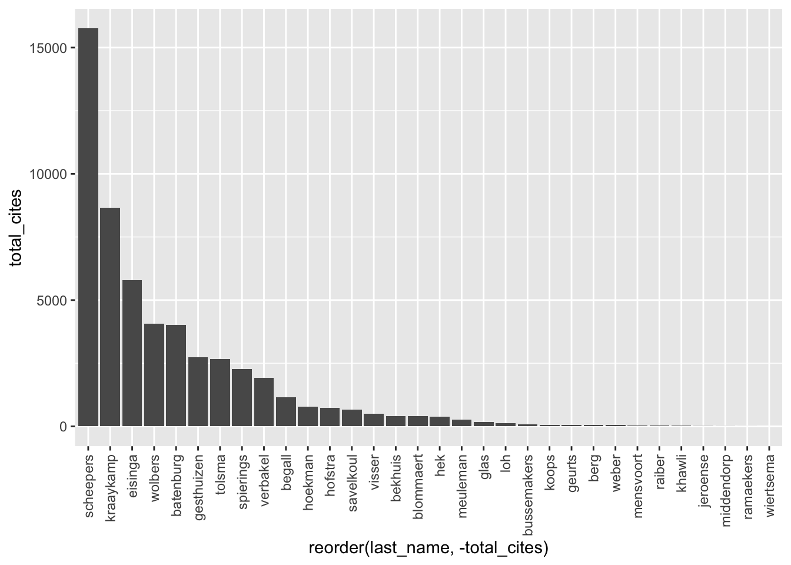
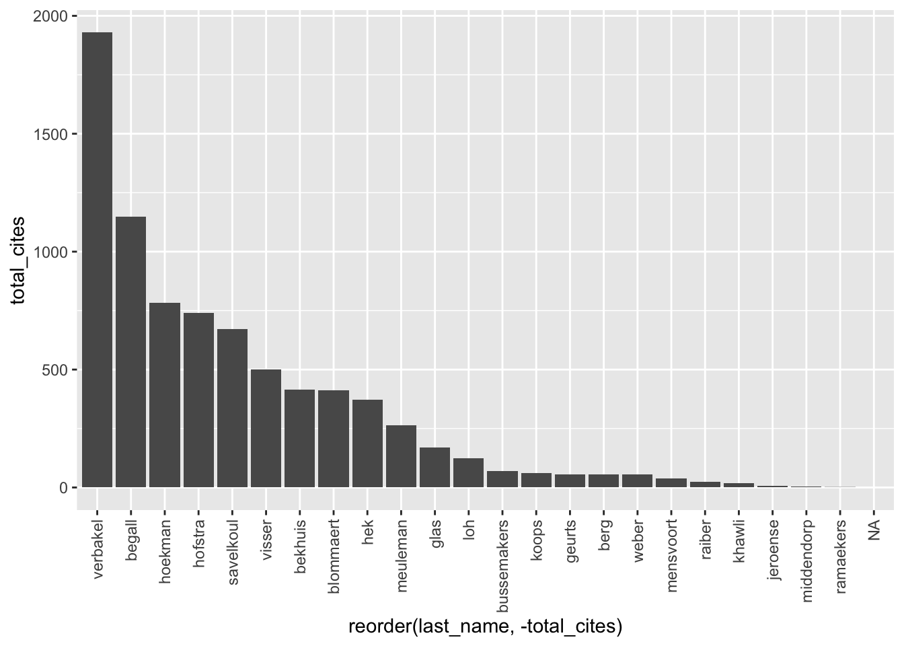
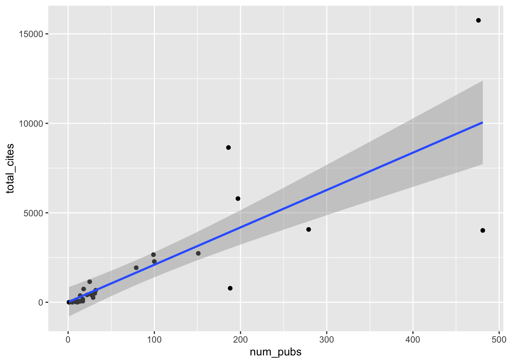

Webscraping Sociology Staff
Anuschka Peelen
2022-09-27
#########################################
# Title: Webscraping in R
# Author: Bas Hofstra
# Version: 29-07-2021
#########################################
#start with clean workspace
rm(list=ls())
# install.packages("data.table")
library(data.table) # mainly for faster data handling
library(tidyverse) # I assume you already installed this one!
# install.packages("httr") # we don't need this for now
# require(httr)
#install.packages("xml2")
require(xml2)
#install.packages("rvest")
require(rvest)
#install.packages("devtools")
require(devtools)
# Note we're doing something different here. We're installing a *latest* version directly from GitHub
# This is because the released version of this packages contains some errors!
#devtools::install_github("jkeirstead/scholar")
require(scholar)
#define workdirectory, note the double *backslashes* if you're on windows
# setwd("/yourpathhere)"# Let's first get the staff page read_html is a function that simply extracts html webpages and
# puts them in xml format
soc_staff <- read_html("https://www.ru.nl/sociology/research/staff/")
head(soc_staff)#> $node
#> <pointer: 0x600003c05000>
#>
#> $doc
#> <pointer: 0x600002504160>class(soc_staff)#> [1] "xml_document" "xml_node"soc_staff <- soc_staff %>%
rvest::html_nodes("body") %>%
xml2::xml_find_all("//td") %>%
rvest::html_text()fodd <- function(x) {
#what is x, x is a vector
x%%2 != 0
}
nstaf <- length(soc_staff)
nstaf#> [1] 102fodd(1:nstaf)#> [1] TRUE FALSE TRUE FALSE TRUE FALSE TRUE FALSE TRUE FALSE TRUE FALSE TRUE FALSE TRUE
#> [16] FALSE TRUE FALSE TRUE FALSE TRUE FALSE TRUE FALSE TRUE FALSE TRUE FALSE TRUE FALSE
#> [31] TRUE FALSE TRUE FALSE TRUE FALSE TRUE FALSE TRUE FALSE TRUE FALSE TRUE FALSE TRUE
#> [46] FALSE TRUE FALSE TRUE FALSE TRUE FALSE TRUE FALSE TRUE FALSE TRUE FALSE TRUE FALSE
#> [61] TRUE FALSE TRUE FALSE TRUE FALSE TRUE FALSE TRUE FALSE TRUE FALSE TRUE FALSE TRUE
#> [76] FALSE TRUE FALSE TRUE FALSE TRUE FALSE TRUE FALSE TRUE FALSE TRUE FALSE TRUE FALSE
#> [91] TRUE FALSE TRUE FALSE TRUE FALSE TRUE FALSE TRUE FALSE TRUE FALSEsoc_names <- soc_staff[fodd(1:nstaf)]
head(soc_names)#> [1] "Staff:" "Batenburg, prof. dr. R. (Ronald)"
#> [3] "Begall, dr. K.H. (Katia)" "Bekhuis, dr. H. (Hidde)"
#> [5] "Berg, dr. L. van den (Lonneke)" "Blommaert, dr. L. (Lieselotte)"soc_names#> [1] "Staff:"
#> [2] "Batenburg, prof. dr. R. (Ronald)"
#> [3] "Begall, dr. K.H. (Katia)"
#> [4] "Bekhuis, dr. H. (Hidde)"
#> [5] "Berg, dr. L. van den (Lonneke)"
#> [6] "Blommaert, dr. L. (Lieselotte)"
#> [7] "Eisinga, prof. dr. R.N. (Rob)"
#> [8] "Gesthuizen, dr. M.J.W. (Maurice)"
#> [9] "Geurts, dr. P.G. (Nella)"
#> [10] "Glas, dr. S. (Saskia)"
#> [11] "Hek, dr. M. van (Margriet)"
#> [12] "Hoekman, dr. R. H. A.(Remco)"
#> [13] "Hofstra, dr. B. (Bas)"
#> [14] "Koops, dr. J. (Judith)"
#> [15] "Kraaykamp, prof. dr. G.L.M. (Gerbert)"
#> [16] "Meuleman, dr. (Roza)"
#> [17] "Savelkoul, dr. M.J. (Michael)"
#> [18] "Scheepers, prof. dr. P.L.H. (Peer)"
#> [19] "Spierings, dr. C.H.B.M. (Niels)"
#> [20] "Tolsma, dr. J. (Jochem)"
#> [21] "\r\n Verbakel, prof. dr. C.M.C. (Ellen)\r\n Head of the department\r\n "
#> [22] "Visser, dr. M. (Mark)"
#> [23] "Wolbers, prof. dr. M.H.J. (Maarten)"
#> [24] "PhD:"
#> [25] "Bussemakers, C. (Carlijn) MSc"
#> [26] "Franken, R. (Rob) MSc"
#> [27] "Firat, M. (Mustafa) MSc"
#> [28] "\r\n Güneyli, A. (Ayşegül)\r\n "
#> [29] "Hendriks, I.P. (Inge) MSc"
#> [30] "Jeroense, T.M.G. (Thijmen) MSc"
#> [31] "Kollar, R. (Rachel)"
#> [32] "Linders, N. (Nik) MSc"
#> [33] "Loh, S.M. (Renae) MSc"
#> [34] "Meijeren, M. (Maikel) MSc"
#> [35] "Mensvoort, C.A. van (Carly) MSc"
#> [36] "\r\n Mulders, A.M. (Anne Maaike) MSc\r\n "
#> [37] "Müller, K. (Katrin) MSc"
#> [38] "Raiber, K. (Klara) MSc"
#> [39] "Ramaekers, M.J.M. (Marlou) MSc"
#> [40] "Wiertsema, S. (Sara) MSc"
#> [41] "External PhD:"
#> [42] "Betkó, drs. J.G. (János)"
#> [43] "Middendorp J. (Jansje) van MSc"
#> [44] "Vis, E. (Elize) MSc"
#> [45] "Weber, T. (Tijmen) MSc"
#> [46] "Guest researchers:"
#> [47] "Khawli, E. el (Elissa) post-doc, Dr."
#> [48] "Sterkens, dr. C.J.A. (Carl)"
#> [49] "Vermeer, dr. P.A.D.M. (Paul)"
#> [50] "Other researchers:"
#> [51] "Grubben, M. (Malou)"soc_names#> [1] "Staff:"
#> [2] "Batenburg, prof. dr. R. (Ronald)"
#> [3] "Begall, dr. K.H. (Katia)"
#> [4] "Bekhuis, dr. H. (Hidde)"
#> [5] "Berg, dr. L. van den (Lonneke)"
#> [6] "Blommaert, dr. L. (Lieselotte)"
#> [7] "Eisinga, prof. dr. R.N. (Rob)"
#> [8] "Gesthuizen, dr. M.J.W. (Maurice)"
#> [9] "Geurts, dr. P.G. (Nella)"
#> [10] "Glas, dr. S. (Saskia)"
#> [11] "Hek, dr. M. van (Margriet)"
#> [12] "Hoekman, dr. R. H. A.(Remco)"
#> [13] "Hofstra, dr. B. (Bas)"
#> [14] "Koops, dr. J. (Judith)"
#> [15] "Kraaykamp, prof. dr. G.L.M. (Gerbert)"
#> [16] "Meuleman, dr. (Roza)"
#> [17] "Savelkoul, dr. M.J. (Michael)"
#> [18] "Scheepers, prof. dr. P.L.H. (Peer)"
#> [19] "Spierings, dr. C.H.B.M. (Niels)"
#> [20] "Tolsma, dr. J. (Jochem)"
#> [21] "\r\n Verbakel, prof. dr. C.M.C. (Ellen)\r\n Head of the department\r\n "
#> [22] "Visser, dr. M. (Mark)"
#> [23] "Wolbers, prof. dr. M.H.J. (Maarten)"
#> [24] "PhD:"
#> [25] "Bussemakers, C. (Carlijn) MSc"
#> [26] "Franken, R. (Rob) MSc"
#> [27] "Firat, M. (Mustafa) MSc"
#> [28] "\r\n Güneyli, A. (Ayşegül)\r\n "
#> [29] "Hendriks, I.P. (Inge) MSc"
#> [30] "Jeroense, T.M.G. (Thijmen) MSc"
#> [31] "Kollar, R. (Rachel)"
#> [32] "Linders, N. (Nik) MSc"
#> [33] "Loh, S.M. (Renae) MSc"
#> [34] "Meijeren, M. (Maikel) MSc"
#> [35] "Mensvoort, C.A. van (Carly) MSc"
#> [36] "\r\n Mulders, A.M. (Anne Maaike) MSc\r\n "
#> [37] "Müller, K. (Katrin) MSc"
#> [38] "Raiber, K. (Klara) MSc"
#> [39] "Ramaekers, M.J.M. (Marlou) MSc"
#> [40] "Wiertsema, S. (Sara) MSc"
#> [41] "External PhD:"
#> [42] "Betkó, drs. J.G. (János)"
#> [43] "Middendorp J. (Jansje) van MSc"
#> [44] "Vis, E. (Elize) MSc"
#> [45] "Weber, T. (Tijmen) MSc"
#> [46] "Guest researchers:"
#> [47] "Khawli, E. el (Elissa) post-doc, Dr."
#> [48] "Sterkens, dr. C.J.A. (Carl)"
#> [49] "Vermeer, dr. P.A.D.M. (Paul)"
#> [50] "Other researchers:"
#> [51] "Grubben, M. (Malou)"soc_experts <- soc_staff[!fodd(1:nstaf)] # in the 1 until 94st number, get the even elements
head(soc_experts)#> [1] "Expertise:"
#> [2] "Healthcare, labour market and healthcare professions and training"
#> [3] "Family, life course, labour market participation, division of household tasks and gender norms"
#> [4] "Welfare state, nationalism and sports"
#> [5] "Family, life course and transition to adulthood"
#> [6] "Discrimination and inequality on the labour market"soc_df <- data.frame(cbind(soc_names, soc_experts)) # inspect again, and remove the rows we don't need (check for yourself to be certain!)
delrows <- which(soc_df$soc_names == "Staff:" | soc_df$soc_names == "PhD:" | soc_df$soc_names == "External PhD:" |
soc_df$soc_names == "Guest researchers:" | soc_df$soc_names == "Other researchers:")
soc_df <- soc_df[-delrows, ]# Last name seems to be everything before the comma
soc_df$last_name <- gsub(",.*$", "", soc_df$soc_names)
# first name is everything between brackets
soc_df$first_name <- str_extract_all(soc_df$soc_names, "(?<=\\().+?(?=\\))", simplify = TRUE)soc_df$last_name <- gsub(" J. \\(Jansje\\) van MSc", "", soc_df$last_name)
soc_df$first_name <- tolower(soc_df$first_name) # everything to lower!
soc_df$last_name <- tolower(soc_df$last_name)# trimws looses all spacing before and after (if you specify 'both') a character string
soc_df$last_name <- trimws(soc_df$last_name, which = c("both"), whitespace = "[ \t\r\n]")
soc_df$first_name <- trimws(soc_df$first_name, which = c("both"), whitespace = "[ \t\r\n]")
soc_df$soc_experts <- trimws(soc_df$soc_experts, which = c("both"), whitespace = "[ \t\r\n]")
soc_df$soc_names <- trimws(soc_df$soc_names, which = c("both"), whitespace = "[ \t\r\n]")# set affiliation to radboud, comes in handy for querying google scholar
soc_df$affiliation <- "radboud university"soc_df#> soc_names
#> 2 Batenburg, prof. dr. R. (Ronald)
#> 3 Begall, dr. K.H. (Katia)
#> 4 Bekhuis, dr. H. (Hidde)
#> 5 Berg, dr. L. van den (Lonneke)
#> 6 Blommaert, dr. L. (Lieselotte)
#> 7 Eisinga, prof. dr. R.N. (Rob)
#> 8 Gesthuizen, dr. M.J.W. (Maurice)
#> 9 Geurts, dr. P.G. (Nella)
#> 10 Glas, dr. S. (Saskia)
#> 11 Hek, dr. M. van (Margriet)
#> 12 Hoekman, dr. R. H. A.(Remco)
#> 13 Hofstra, dr. B. (Bas)
#> 14 Koops, dr. J. (Judith)
#> 15 Kraaykamp, prof. dr. G.L.M. (Gerbert)
#> 16 Meuleman, dr. (Roza)
#> 17 Savelkoul, dr. M.J. (Michael)
#> 18 Scheepers, prof. dr. P.L.H. (Peer)
#> 19 Spierings, dr. C.H.B.M. (Niels)
#> 20 Tolsma, dr. J. (Jochem)
#> 21 Verbakel, prof. dr. C.M.C. (Ellen)\r\n Head of the department
#> 22 Visser, dr. M. (Mark)
#> 23 Wolbers, prof. dr. M.H.J. (Maarten)
#> 25 Bussemakers, C. (Carlijn) MSc
#> 26 Franken, R. (Rob) MSc
#> 27 Firat, M. (Mustafa) MSc
#> 28 Güneyli, A. (Ayşegül)
#> 29 Hendriks, I.P. (Inge) MSc
#> 30 Jeroense, T.M.G. (Thijmen) MSc
#> 31 Kollar, R. (Rachel)
#> 32 Linders, N. (Nik) MSc
#> 33 Loh, S.M. (Renae) MSc
#> 34 Meijeren, M. (Maikel) MSc
#> 35 Mensvoort, C.A. van (Carly) MSc
#> 36 Mulders, A.M. (Anne Maaike) MSc
#> 37 Müller, K. (Katrin) MSc
#> 38 Raiber, K. (Klara) MSc
#> 39 Ramaekers, M.J.M. (Marlou) MSc
#> 40 Wiertsema, S. (Sara) MSc
#> 42 Betkó, drs. J.G. (János)
#> 43 Middendorp J. (Jansje) van MSc
#> 44 Vis, E. (Elize) MSc
#> 45 Weber, T. (Tijmen) MSc
#> 47 Khawli, E. el (Elissa) post-doc, Dr.
#> 48 Sterkens, dr. C.J.A. (Carl)
#> 49 Vermeer, dr. P.A.D.M. (Paul)
#> 51 Grubben, M. (Malou)
#> soc_experts
#> 2 Healthcare, labour market and healthcare professions and training
#> 3 Family, life course, labour market participation, division of household tasks and gender norms
#> 4 Welfare state, nationalism and sports
#> 5 Family, life course and transition to adulthood
#> 6 Discrimination and inequality on the labour market
#> 7 Methods of research and statistics
#> 8 Poverty en social cohesion
#> 9 Integration and migration
#> 10 Islam, gender attitudes and sexuality
#> 11 Educational inequality, gender inequality, organizational sociology and culture
#> 12 Sports and policy sociology
#> 13 Diversity, inequality and innovation
#> 14 Family sociology and demography
#> 15 Educational inequality, culture and health
#> 16 Culture and nationalism
#> 17 Ethnic diversity, prejudice and social cohesion
#> 18 Comparative research, social cohesion and diversity
#> 19 Islam, gender, populism, social media, Middle East and migration
#> 20 Inequality, criminology and ethnic diversity
#> 21 Health, family and work
#> 22 Older workers, radicalism and social cohesion
#> 23 Educational inequality and labour market inequality
#> 25 Adverse youth experiences and social inequality
#> 26 Sport networks and motivation for sustainable sports participation
#> 27 Social inequality, older workers, life course and retirement
#> 28 Work-care
#> 29 Resistance to refugees and social cohesion
#> 30 Political participation, segregation, opinion polarization and voting behaviour
#> 31 Spirit project
#> 32 Populism, gender, masculinity and sexuality
#> 33 Educational sociology, social stratification, gender inequality and information communication technology (ICT)
#> 34 Social capital, volunteer work and diversity
#> 35 Gender, leadership and social norms
#> 36 Social inequality in science
#> 37 Opinions about discrimination, migration and inequality
#> 38 Informal care, employment, social inequality and gender
#> 39 Prosocial behaviour and family
#> 40 Inequality in sports and physical activity, school-to-work transition and employment
#> 42 Social assistance benefit, poverty, reintegration, RCT and social experiment
#> 43 Home administration
#> 44 Healthcare, labour market, healthcare professions and training, health and social capital
#> 45 International student mobility and the internationalization of higher education
#> 47 Inequality in older age
#> 48 Religious conflicts, cohesion, religion and the philosophy of life
#> 49 Socialization processes, secularisation, religion and the philosophy of life
#> 51 Inequality in sports and movement
#> last_name first_name affiliation
#> 2 batenburg ronald radboud university
#> 3 begall katia radboud university
#> 4 bekhuis hidde radboud university
#> 5 berg lonneke radboud university
#> 6 blommaert lieselotte radboud university
#> 7 eisinga rob radboud university
#> 8 gesthuizen maurice radboud university
#> 9 geurts nella radboud university
#> 10 glas saskia radboud university
#> 11 hek margriet radboud university
#> 12 hoekman remco radboud university
#> 13 hofstra bas radboud university
#> 14 koops judith radboud university
#> 15 kraaykamp gerbert radboud university
#> 16 meuleman roza radboud university
#> 17 savelkoul michael radboud university
#> 18 scheepers peer radboud university
#> 19 spierings niels radboud university
#> 20 tolsma jochem radboud university
#> 21 verbakel ellen radboud university
#> 22 visser mark radboud university
#> 23 wolbers maarten radboud university
#> 25 bussemakers carlijn radboud university
#> 26 franken rob radboud university
#> 27 firat mustafa radboud university
#> 28 güneyli ayşegül radboud university
#> 29 hendriks inge radboud university
#> 30 jeroense thijmen radboud university
#> 31 kollar rachel radboud university
#> 32 linders nik radboud university
#> 33 loh renae radboud university
#> 34 meijeren maikel radboud university
#> 35 mensvoort carly radboud university
#> 36 mulders anne maaike radboud university
#> 37 müller katrin radboud university
#> 38 raiber klara radboud university
#> 39 ramaekers marlou radboud university
#> 40 wiertsema sara radboud university
#> 42 betkó jános radboud university
#> 43 middendorp jansje radboud university
#> 44 vis elize radboud university
#> 45 weber tijmen radboud university
#> 47 khawli elissa radboud university
#> 48 sterkens carl radboud university
#> 49 vermeer paul radboud university
#> 51 grubben malou radboud university#require(scholar)
get_scholar_id_fix <- function (last_name = "", first_name = "", affiliation = NA)
{
if (!any(nzchar(c(first_name, last_name))))
stop("At least one of first and last name must be specified!")
site <- getOption("scholar_site")
url <- paste0(site, "/citations?view_op=search_authors&mauthors=",
first_name, "+", last_name, "&hl=en&oi=ao")
page <- get_scholar_resp(url)
if (is.null(page))
return(NA)
aa <- httr::content(page, as = "text")
# added by Bas Hofstra: bugfix for IDs that have a dash ("-")
ids <- substring(aa, regexpr(";user=", aa))
ids <- substr(ids, 1, 19) # error prone, but unsure how to solve otherwise
# if (nchar(stringr::str_extract_all(string = aa, pattern = ";user=[[:alnum:]]+[[:punct:]]")[[1]][1]) < 18) {
# ids <- stringr::str_extract_all(string = aa, pattern = ";user=[[:alnum:]]+[[:punct:]]+[[:alnum:]]+[[:punct:]]")
# } else {
# ids <- stringr::str_extract_all(string = aa, pattern = ";user=[[:alnum:]]+[[:punct:]]")
# }
if (length(unlist(ids)) == 0) {
message("No Scholar ID found.")
return(NA)
}
ids <- ids %>% unlist %>% gsub(";user=|[[:punct:]]$", "",
.) %>% unique
if (length(ids) > 1) {
profiles <- lapply(ids, scholar::get_profile)
if (is.na(affiliation)) {
x_profile <- profiles[[1]]
warning("Selecting first out of ", length(profiles),
" candidate matches.")
}
else {
which_profile <- sapply(profiles, function(x) {
stringr::str_count(string = x$affiliation, pattern = stringr::coll(affiliation,
ignore_case = TRUE))
})
if (all(which_profile == 0)) {
warning("No researcher found at the indicated affiliation.")
return(NA)
}
else {
x_profile <- profiles[[which(which_profile !=
0)]]
}
}
}
else {
x_profile <- scholar::get_profile(id = ids)
}
return(x_profile$id)
}# Look throught get_scholar_id_fix(last_name, first_name, affiliation)
# if we can find google scholar profiles of sociology staff!
soc_df$gs_id <- ""
for (i in 1:nrow(soc_df)) {
print(i)
time <- runif(1, 0, 1)
Sys.sleep(time)
tryCatch({
soc_df[i,c("gs_id")] <- get_scholar_id_fix(last_name = soc_df[i, c("last_name")], # so search on last_name of staff (third column)
first_name = soc_df[i, c("first_name")], # search on first_name of staff (fourth column)
affiliation = soc_df[i,c("affiliation")]) # search on affiliation of each staff (fifth column)
}, error=function(e){cat("ERROR :", conditionMessage(e), "\n")}) # continue on error, but print the error
}#> [1] 1
#> [1] 2
#> [1] 3
#> [1] 4
#> [1] 5
#> [1] 6
#> [1] 7
#> [1] 8
#> [1] 9
#> [1] 10
#> [1] 11
#> [1] 12
#> [1] 13
#> [1] 14
#> [1] 15
#> [1] 16
#> [1] 17
#> [1] 18
#> [1] 19
#> [1] 20
#> [1] 21
#> [1] 22
#> [1] 23
#> [1] 24
#> [1] 25
#> [1] 26
#> ERROR : URL using bad/illegal format or missing URL
#> [1] 27
#> ERROR : URL using bad/illegal format or missing URL
#> [1] 28
#> [1] 29
#> ERROR : URL using bad/illegal format or missing URL
#> [1] 30
#> ERROR : URL using bad/illegal format or missing URL
#> [1] 31
#> [1] 32
#> ERROR : URL using bad/illegal format or missing URL
#> [1] 33
#> [1] 34
#> ERROR : URL using bad/illegal format or missing URL
#> [1] 35
#> [1] 36
#> [1] 37
#> [1] 38
#> [1] 39
#> ERROR : URL using bad/illegal format or missing URL
#> [1] 40
#> [1] 41
#> ERROR : URL using bad/illegal format or missing URL
#> [1] 42
#> [1] 43
#> [1] 44
#> ERROR : URL using bad/illegal format or missing URL
#> [1] 45
#> ERROR : URL using bad/illegal format or missing URL
#> [1] 46
#> ERROR : URL using bad/illegal format or missing URL# remove those without pubs from the df
# seems we're left with about 34 sociology staff members!
soc_df <- soc_df[!soc_df$gs_id == "", ]
soc_df#> soc_names
#> 2 Batenburg, prof. dr. R. (Ronald)
#> 3 Begall, dr. K.H. (Katia)
#> 4 Bekhuis, dr. H. (Hidde)
#> 5 Berg, dr. L. van den (Lonneke)
#> 6 Blommaert, dr. L. (Lieselotte)
#> 7 Eisinga, prof. dr. R.N. (Rob)
#> 8 Gesthuizen, dr. M.J.W. (Maurice)
#> 9 Geurts, dr. P.G. (Nella)
#> 10 Glas, dr. S. (Saskia)
#> 11 Hek, dr. M. van (Margriet)
#> 12 Hoekman, dr. R. H. A.(Remco)
#> 13 Hofstra, dr. B. (Bas)
#> 14 Koops, dr. J. (Judith)
#> 15 Kraaykamp, prof. dr. G.L.M. (Gerbert)
#> 16 Meuleman, dr. (Roza)
#> 17 Savelkoul, dr. M.J. (Michael)
#> 18 Scheepers, prof. dr. P.L.H. (Peer)
#> 19 Spierings, dr. C.H.B.M. (Niels)
#> 20 Tolsma, dr. J. (Jochem)
#> 21 Verbakel, prof. dr. C.M.C. (Ellen)\r\n Head of the department
#> 22 Visser, dr. M. (Mark)
#> 23 Wolbers, prof. dr. M.H.J. (Maarten)
#> 25 Bussemakers, C. (Carlijn) MSc
#> 26 Franken, R. (Rob) MSc
#> 27 Firat, M. (Mustafa) MSc
#> 30 Jeroense, T.M.G. (Thijmen) MSc
#> 33 Loh, S.M. (Renae) MSc
#> 35 Mensvoort, C.A. van (Carly) MSc
#> 37 Müller, K. (Katrin) MSc
#> 38 Raiber, K. (Klara) MSc
#> 39 Ramaekers, M.J.M. (Marlou) MSc
#> 40 Wiertsema, S. (Sara) MSc
#> 43 Middendorp J. (Jansje) van MSc
#> 45 Weber, T. (Tijmen) MSc
#> 47 Khawli, E. el (Elissa) post-doc, Dr.
#> soc_experts
#> 2 Healthcare, labour market and healthcare professions and training
#> 3 Family, life course, labour market participation, division of household tasks and gender norms
#> 4 Welfare state, nationalism and sports
#> 5 Family, life course and transition to adulthood
#> 6 Discrimination and inequality on the labour market
#> 7 Methods of research and statistics
#> 8 Poverty en social cohesion
#> 9 Integration and migration
#> 10 Islam, gender attitudes and sexuality
#> 11 Educational inequality, gender inequality, organizational sociology and culture
#> 12 Sports and policy sociology
#> 13 Diversity, inequality and innovation
#> 14 Family sociology and demography
#> 15 Educational inequality, culture and health
#> 16 Culture and nationalism
#> 17 Ethnic diversity, prejudice and social cohesion
#> 18 Comparative research, social cohesion and diversity
#> 19 Islam, gender, populism, social media, Middle East and migration
#> 20 Inequality, criminology and ethnic diversity
#> 21 Health, family and work
#> 22 Older workers, radicalism and social cohesion
#> 23 Educational inequality and labour market inequality
#> 25 Adverse youth experiences and social inequality
#> 26 Sport networks and motivation for sustainable sports participation
#> 27 Social inequality, older workers, life course and retirement
#> 30 Political participation, segregation, opinion polarization and voting behaviour
#> 33 Educational sociology, social stratification, gender inequality and information communication technology (ICT)
#> 35 Gender, leadership and social norms
#> 37 Opinions about discrimination, migration and inequality
#> 38 Informal care, employment, social inequality and gender
#> 39 Prosocial behaviour and family
#> 40 Inequality in sports and physical activity, school-to-work transition and employment
#> 43 Home administration
#> 45 International student mobility and the internationalization of higher education
#> 47 Inequality in older age
#> last_name first_name affiliation gs_id
#> 2 batenburg ronald radboud university UK7nVSEAAAAJ
#> 3 begall katia radboud university e7zfTqMAAAAJ
#> 4 bekhuis hidde radboud university Q4saWX8AAAAJ
#> 5 berg lonneke radboud university vzBNQ1kAAAAJ
#> 6 blommaert lieselotte radboud university RG54uasAAAAJ
#> 7 eisinga rob radboud university GDHdsXAAAAAJ
#> 8 gesthuizen maurice radboud university n6hiblQAAAAJ
#> 9 geurts nella radboud university VCTvbTkAAAAJ
#> 10 glas saskia radboud university ZMc0j2YAAAAJ
#> 11 hek margriet radboud university ZvLlx2EAAAAJ
#> 12 hoekman remco radboud university LsMimOEAAAAJ
#> 13 hofstra bas radboud university Nx7pDywAAAAJ
#> 14 koops judith radboud university kLiOlQoAAAAJ
#> 15 kraaykamp gerbert radboud university l8aM4jAAAAAJ
#> 16 meuleman roza radboud university iKs_5WkAAAAJ
#> 17 savelkoul michael radboud university _f3krXUAAAAJ
#> 18 scheepers peer radboud university hPeXxvEAAAAJ
#> 19 spierings niels radboud university cy3Ye6sAAAAJ
#> 20 tolsma jochem radboud university Iu23-90AAAAJ
#> 21 verbakel ellen radboud university w2McVJAAAAAJ
#> 22 visser mark radboud university ItITloQAAAAJ
#> 23 wolbers maarten radboud university TqKrXnMAAAAJ
#> 25 bussemakers carlijn radboud university bDPtkIoAAAAJ
#> 26 franken rob radboud university p3IwtT4AAAAJ
#> 27 firat mustafa radboud university _ukytQYAAAAJ
#> 30 jeroense thijmen radboud university izq-KNUAAAAJ
#> 33 loh renae radboud university tFaMPOQAAAAJ
#> 35 mensvoort carly radboud university z6iMs-UAAAAJ
#> 37 müller katrin radboud university lkVq32sAAAAJ
#> 38 raiber klara radboud university xE65HUcAAAAJ
#> 39 ramaekers marlou radboud university fp99JAQAAAAJ
#> 40 wiertsema sara radboud university wgQQD6kAAAAJ
#> 43 middendorp jansje radboud university gs0li6MAAAAJ
#> 45 weber tijmen radboud university KfLALRIAAAAJ
#> 47 khawli elissa radboud university 2wDZZbsAAAAJsoc_list_profiles <- list() # first we create an empty list that we then fill up with the for loop
soc_list_publications <- list()
for (i in 1:nrow(soc_df)) {
print(i)
time <- runif(1, 0, 1)
Sys.sleep(time)
# note how you call different elements in a list '[[]]', fill in the i-th element
soc_list_profiles[[i]] <- get_profile(soc_df[i, c("gs_id")]) # Note how we call row i (remember how to call rows in a DF/Matrix) and then the associated scholar id
soc_list_publications[[i]] <- get_publications(soc_df[i, c("gs_id")])
soc_list_publications[[i]][, c("gs_id")] <- soc_df[i, c("gs_id")] # note that we again attach an id
# so both functions here call the entire profile and pubs for an author, based on google
# scholar ids
}#> [1] 1
#> [1] 2
#> [1] 3
#> [1] 4
#> [1] 5
#> [1] 6
#> [1] 7
#> [1] 8
#> [1] 9
#> [1] 10
#> [1] 11
#> [1] 12
#> [1] 13
#> [1] 14
#> [1] 15
#> [1] 16
#> [1] 17
#> [1] 18
#> [1] 19
#> [1] 20
#> [1] 21
#> [1] 22
#> [1] 23
#> [1] 24
#> [1] 25
#> [1] 26
#> [1] 27
#> [1] 28
#> [1] 29
#> [1] 30
#> [1] 31
#> [1] 32
#> [1] 33
#> [1] 34
#> [1] 35# Notice how fast the data blow up! The 34 RU sociology scholars publish ~3000 papers
soc_df_publications <- bind_rows(soc_list_publications)soc_profiles_df <- list()
for (i in 1:length(soc_list_profiles)) {
# soc_profiles_df[[i]] <- data.frame(t(unlist(soc_list_profiles[[i]][1:8]))) #some annyoing
# data handling
soc_profiles_df[[i]] <- unlist(soc_list_profiles[[i]][1:8])
soc_profiles_df[[i]] <- data.frame(soc_profiles_df[[i]])
soc_profiles_df[[i]] <- data.frame(t(soc_profiles_df[[i]]))
}
soc_profiles_df <- bind_rows(soc_profiles_df)
soc_df <- left_join(soc_df, soc_profiles_df, by = c(gs_id = "id")) # merge data with soc_df
soc_df # notice all the new information we were able to get from the scholar profiles!#> soc_names
#> 1 Batenburg, prof. dr. R. (Ronald)
#> 2 Begall, dr. K.H. (Katia)
#> 3 Bekhuis, dr. H. (Hidde)
#> 4 Berg, dr. L. van den (Lonneke)
#> 5 Blommaert, dr. L. (Lieselotte)
#> 6 Eisinga, prof. dr. R.N. (Rob)
#> 7 Gesthuizen, dr. M.J.W. (Maurice)
#> 8 Geurts, dr. P.G. (Nella)
#> 9 Glas, dr. S. (Saskia)
#> 10 Hek, dr. M. van (Margriet)
#> 11 Hoekman, dr. R. H. A.(Remco)
#> 12 Hofstra, dr. B. (Bas)
#> 13 Koops, dr. J. (Judith)
#> 14 Kraaykamp, prof. dr. G.L.M. (Gerbert)
#> 15 Meuleman, dr. (Roza)
#> 16 Savelkoul, dr. M.J. (Michael)
#> 17 Scheepers, prof. dr. P.L.H. (Peer)
#> 18 Spierings, dr. C.H.B.M. (Niels)
#> 19 Tolsma, dr. J. (Jochem)
#> 20 Verbakel, prof. dr. C.M.C. (Ellen)\r\n Head of the department
#> 21 Visser, dr. M. (Mark)
#> 22 Wolbers, prof. dr. M.H.J. (Maarten)
#> 23 Bussemakers, C. (Carlijn) MSc
#> 24 Franken, R. (Rob) MSc
#> 25 Firat, M. (Mustafa) MSc
#> 26 Jeroense, T.M.G. (Thijmen) MSc
#> 27 Loh, S.M. (Renae) MSc
#> 28 Mensvoort, C.A. van (Carly) MSc
#> 29 Müller, K. (Katrin) MSc
#> 30 Raiber, K. (Klara) MSc
#> 31 Ramaekers, M.J.M. (Marlou) MSc
#> 32 Wiertsema, S. (Sara) MSc
#> 33 Middendorp J. (Jansje) van MSc
#> 34 Weber, T. (Tijmen) MSc
#> 35 Khawli, E. el (Elissa) post-doc, Dr.
#> soc_experts
#> 1 Healthcare, labour market and healthcare professions and training
#> 2 Family, life course, labour market participation, division of household tasks and gender norms
#> 3 Welfare state, nationalism and sports
#> 4 Family, life course and transition to adulthood
#> 5 Discrimination and inequality on the labour market
#> 6 Methods of research and statistics
#> 7 Poverty en social cohesion
#> 8 Integration and migration
#> 9 Islam, gender attitudes and sexuality
#> 10 Educational inequality, gender inequality, organizational sociology and culture
#> 11 Sports and policy sociology
#> 12 Diversity, inequality and innovation
#> 13 Family sociology and demography
#> 14 Educational inequality, culture and health
#> 15 Culture and nationalism
#> 16 Ethnic diversity, prejudice and social cohesion
#> 17 Comparative research, social cohesion and diversity
#> 18 Islam, gender, populism, social media, Middle East and migration
#> 19 Inequality, criminology and ethnic diversity
#> 20 Health, family and work
#> 21 Older workers, radicalism and social cohesion
#> 22 Educational inequality and labour market inequality
#> 23 Adverse youth experiences and social inequality
#> 24 Sport networks and motivation for sustainable sports participation
#> 25 Social inequality, older workers, life course and retirement
#> 26 Political participation, segregation, opinion polarization and voting behaviour
#> 27 Educational sociology, social stratification, gender inequality and information communication technology (ICT)
#> 28 Gender, leadership and social norms
#> 29 Opinions about discrimination, migration and inequality
#> 30 Informal care, employment, social inequality and gender
#> 31 Prosocial behaviour and family
#> 32 Inequality in sports and physical activity, school-to-work transition and employment
#> 33 Home administration
#> 34 International student mobility and the internationalization of higher education
#> 35 Inequality in older age
#> last_name first_name affiliation.x gs_id name
#> 1 batenburg ronald radboud university UK7nVSEAAAAJ Ronald Batenburg
#> 2 begall katia radboud university e7zfTqMAAAAJ Katia Begall
#> 3 bekhuis hidde radboud university Q4saWX8AAAAJ Hidde Bekhuis
#> 4 berg lonneke radboud university vzBNQ1kAAAAJ Lonneke van den Berg
#> 5 blommaert lieselotte radboud university RG54uasAAAAJ Lieselotte Blommaert
#> 6 eisinga rob radboud university GDHdsXAAAAAJ Rob Eisinga
#> 7 gesthuizen maurice radboud university n6hiblQAAAAJ Maurice Gesthuizen
#> 8 geurts nella radboud university VCTvbTkAAAAJ Nella Geurts
#> 9 glas saskia radboud university ZMc0j2YAAAAJ Saskia Glas
#> 10 hek margriet radboud university ZvLlx2EAAAAJ Margriet van Hek
#> 11 hoekman remco radboud university LsMimOEAAAAJ Remco Hoekman
#> 12 hofstra bas radboud university Nx7pDywAAAAJ Bas Hofstra
#> 13 koops judith radboud university kLiOlQoAAAAJ Judith C. Koops
#> 14 kraaykamp gerbert radboud university l8aM4jAAAAAJ Gerbert Kraaykamp
#> 15 meuleman roza radboud university iKs_5WkAAAAJ Roza Meuleman
#> 16 savelkoul michael radboud university _f3krXUAAAAJ Michael Savelkoul
#> 17 scheepers peer radboud university hPeXxvEAAAAJ peer scheepers
#> 18 spierings niels radboud university cy3Ye6sAAAAJ Niels Spierings
#> 19 tolsma jochem radboud university Iu23-90AAAAJ Jochem Tolsma
#> 20 verbakel ellen radboud university w2McVJAAAAAJ Ellen Verbakel
#> 21 visser mark radboud university ItITloQAAAAJ Mark Visser
#> 22 wolbers maarten radboud university TqKrXnMAAAAJ Maarten HJ Wolbers
#> 23 bussemakers carlijn radboud university bDPtkIoAAAAJ Carlijn Bussemakers
#> 24 franken rob radboud university p3IwtT4AAAAJ Rob JM Franken
#> 25 firat mustafa radboud university _ukytQYAAAAJ mustafa Inc
#> 26 jeroense thijmen radboud university izq-KNUAAAAJ Thijmen Jeroense
#> 27 loh renae radboud university tFaMPOQAAAAJ Renae Sze Ming Loh
#> 28 mensvoort carly radboud university z6iMs-UAAAAJ Carly van Mensvoort
#> 29 müller katrin radboud university lkVq32sAAAAJ PD Dr. Kathrin Friederike Müller
#> 30 raiber klara radboud university xE65HUcAAAAJ Klara Raiber
#> 31 ramaekers marlou radboud university fp99JAQAAAAJ Marlou Ramaekers
#> 32 wiertsema sara radboud university wgQQD6kAAAAJ Sara Wiertsema
#> 33 middendorp jansje radboud university gs0li6MAAAAJ Jansje van Middendorp
#> 34 weber tijmen radboud university KfLALRIAAAAJ Tijmen Weber
#> 35 khawli elissa radboud university 2wDZZbsAAAAJ Elissa El Khawli
#> affiliation.y total_cites
#> 1 Programmaleider NIVEL en bijzonder hoogleraar Radboud Universiteit Nijmegen 4015
#> 2 Radboud University Nijmegen 1147
#> 3 Post Doc Sociology, Radboud University Nijmegen 416
#> 4 Radboud University 55
#> 5 Sociology/Social Cultural Research, Radboud University, Nijmegen, the 412
#> 6 Professor social science research methods, Radboud University Nijmegen 5794
#> 7 Sociology, Radboud University Nijmegen, the Netherland - Assistant Professor 2732
#> 8 Department of Sociology, Radboud University 56
#> 9 Assistant Professor (tenured), Radboud University 170
#> 10 Radboud University 372
#> 11 Director, Mulier Institute / Senior researcher, Radboud University 783
#> 12 Assistant Professor, Radboud University 740
#> 13 Dr. Family Demographer, Radboud University 62
#> 14 Professor of Sociology, Radboud Universiteit Nijmegen 8648
#> 15 Assistant Professor - Sociology - Radboud University Nijmegen 265
#> 16 Assistant Professor - Sociology, Radboud University Nijmegen, the Netherlands 671
#> 17 hoogleraar methodologie, faculteit der sociale wetenschappen radboud universiteit 15756
#> 18 Associate Professor of Sociology, Radboud University 2278
#> 19 Professor, Radboud University Nijmegen / University of Groningen 2658
#> 20 Professor of Sociology, Department of Sociology, Radboud University Nijmegen 1929
#> 21 Assistant Professor, Radboud University 500
#> 22 Professor of Sociology, Radboud University, Nijmegen 4069
#> 23 Department of Sociology, Radboud University 71
#> 24 Unknown affiliation 1303
#> 25 firat university 8954
#> 26 PhD candidate, Radboud University Nijmegen 6
#> 27 PhD candidate, Radboud University 123
#> 28 Radboud University 38
#> 29 Universtität Rostock, Institut für Medienforschung 252
#> 30 PhD candidate, Radboud University Nijmegen 25
#> 31 PhD Candidate, Radboud University 1
#> 32 PhD candidate, Radboud University <NA>
#> 33 Buitenpromovendus Radboud Universiteit 3
#> 34 Lecturer Statistics and Research, HAN University of Applied Sciences 55
#> 35 Postdoctoral researcher, Radboud University Nijmegen 18
#> h_index i10_index fields1 fields2
#> 1 31 90 Gezondheidszorg arbeidsmarkt
#> 2 9 9 family sociology social demography
#> 3 9 9 Sociologie sports
#> 4 3 2 Family sociology Demography
#> 5 9 9 Labor market Inequality / Ex- / Inclusion
#> 6 34 80 research methods applied statistics
#> 7 26 44 social inequality social cohesion
#> 8 4 1 Sociology Migration
#> 9 7 4 Gender Islam
#> 10 10 10 Sociology stratification
#> 11 13 17 sport sociology sport policy
#> 12 9 8 Sociology of science Social networks
#> 13 5 3 family demography family sociology
#> 14 49 104 social stratification sociology of education
#> 15 9 9 Cultural Sociology Social inequality
#> 16 9 9 <NA> <NA>
#> 17 62 182 <NA> <NA>
#> 18 25 38 politics Islam
#> 19 24 37 social divisions between groups segregation
#> 20 24 37 Family Partners
#> 21 10 10 life course social inequality
#> 22 32 62 school-to-work transitions educational inequality
#> 23 3 2 sociology social inequality
#> 24 11 11 <NA> <NA>
#> 25 45 258 Lie symmetry soliton
#> 26 1 0 Political Participation Social Networks
#> 27 3 2 sociology information and communication technology (ICT)
#> 28 3 2 Gender inequality Social inequality
#> 29 11 11 <NA> <NA>
#> 30 3 1 informal care employment
#> 31 1 0 <NA> <NA>
#> 32 <NA> <NA> <NA> <NA>
#> 33 1 0 vrijwilligers schuldhulpverlening
#> 34 2 2 Sociology Economics
#> 35 2 0 <NA> <NA>
#> homepage
#> 1 https://www.nivel.nl/nl/ronald-batenburg
#> 2 <NA>
#> 3 <NA>
#> 4 https://www.ru.nl/personen/berg-l-van-den-lonneke/
#> 5 http://www.ru.nl/english/people/blommaert-e/
#> 6 http://robeisinga.ruhosting.nl/
#> 7 http://www.ru.nl/methodenentechnieken/methoden-technieken/medewerkers/vm_medewerkers/maurice_gesthuizen/
#> 8 <NA>
#> 9 <NA>
#> 10 <NA>
#> 11 https://www.mulierinstituut.nl/over-mulier/medewerkers/remco-hoekman/
#> 12 http://www.bashofstra.com/
#> 13 <NA>
#> 14 https://www.ru.nl/english/people/kraaykamp-g/
#> 15 <NA>
#> 16 <NA>
#> 17 <NA>
#> 18 https://www.ru.nl/english/people/spierings-c/
#> 19 http://www.jochemtolsma.nl/
#> 20 http://www.ellenverbakel.nl/
#> 21 https://www.researchgate.net/profile/Mark_Visser
#> 22 http://www.socsci.ru.nl/maartenw/
#> 23 <NA>
#> 24 <NA>
#> 25 <NA>
#> 26 https://www.ru.nl/personen/jeroense-t/
#> 27 http://renaeloh.com/
#> 28 https://www.ru.nl/english/people/mensvoort-c-van/
#> 29 https://www.imf.uni-rostock.de/institut/mitarbeiterinnen/lehrende/dr-kathrin-friederike-mueller/
#> 30 https://www.ru.nl/english/people/raiber-k/
#> 31 <NA>
#> 32 <NA>
#> 33 <NA>
#> 34 <NA>
#> 35 <NA>
#> fields3 fields4 fields5
#> 1 <NA> <NA> <NA>
#> 2 <NA> <NA> <NA>
#> 3 sports participation inter-ethnic contact national cultural consumption
#> 4 Inequality <NA> <NA>
#> 5 Ethnicity / Gender / Class / SES <NA> <NA>
#> 6 <NA> <NA> <NA>
#> 7 <NA> <NA> <NA>
#> 8 Integration <NA> <NA>
#> 9 Migrant acculturation Arab region Public opinion
#> 10 educational inequality gender inequality cultural sociology
#> 11 sport participation sport facilities <NA>
#> 12 Online networks Computational social science Big data
#> 13 inequality contraception unmet need for family planning
#> 14 cultural capital educational inequality cultural sociology
#> 15 Cultural capital Social capital Gender inequality
#> 16 <NA> <NA> <NA>
#> 17 <NA> <NA> <NA>
#> 18 gender migration social media
#> 19 inequality <NA> <NA>
#> 20 Work Health Informal caregiving
#> 21 social stratification political sociology retirement
#> 22 social stratification and mobility occupational careers <NA>
#> 23 <NA> <NA> <NA>
#> 24 <NA> <NA> <NA>
#> 25 applied mathematics <NA> <NA>
#> 26 Segregation Polarizaton <NA>
#> 27 educational inequality social stratification <NA>
#> 28 Work <NA> <NA>
#> 29 <NA> <NA> <NA>
#> 30 gender <NA> <NA>
#> 31 <NA> <NA> <NA>
#> 32 <NA> <NA> <NA>
#> 33 <NA> <NA> <NA>
#> 34 Data Analysis Education Philosophy
#> 35 <NA> <NA> <NA>
#> fields
#> 1 <NA>
#> 2 <NA>
#> 3 <NA>
#> 4 <NA>
#> 5 <NA>
#> 6 <NA>
#> 7 <NA>
#> 8 <NA>
#> 9 <NA>
#> 10 <NA>
#> 11 <NA>
#> 12 <NA>
#> 13 <NA>
#> 14 <NA>
#> 15 <NA>
#> 16 <NA>
#> 17 sociale wetenschappen
#> 18 <NA>
#> 19 <NA>
#> 20 <NA>
#> 21 <NA>
#> 22 <NA>
#> 23 <NA>
#> 24 <NA>
#> 25 <NA>
#> 26 <NA>
#> 27 <NA>
#> 28 <NA>
#> 29 Kommunikationswissenschaft
#> 30 <NA>
#> 31 Sociology
#> 32 Sociology
#> 33 <NA>
#> 34 <NA>
#> 35 <NA># get citation history of a scholar
soc_staff_cit <- list()
for (i in 1:nrow(soc_df)) {
soc_staff_cit[[i]] <- get_citation_history(soc_df[i, c("gs_id")])
if (nrow(soc_staff_cit[[i]]) > 0) {
soc_staff_cit[[i]][, c("gs_id")] <- soc_df[i, c("gs_id")] # again attach the gs_id as third column
}
}
soc_staff_cit <- bind_rows(soc_staff_cit)
colnames(soc_staff_cit)[3] <- "gs_id"require(rvest)
require(xml2)
require(tidyverse)
# function to get collaborators and names from GS profiles
fcollabs <- function(gsid, lookforcollabs) {
htmlpage1 <- read_html(paste0("https://scholar.google.nl/citations?user=", gsid, "&hl=en")) # so we paste the google scholar id
profilename <- htmlpage1 %>% html_nodes(xpath = "//*/div[@id='gsc_prf_in']") %>% html_text() # we extract the profile name of that google scholar page
profilecollabs1 <- as.data.frame(0) # empty df necessary for later
profilecollabs2 <- as.data.frame(0) # empty df necessary for later
if (lookforcollabs == 1) { # so if you want to look for collabs, set function to 1
htmlpage2 <- read_html(paste0("https://scholar.google.com/citations?view_op=list_colleagues&hl=en&user=", gsid)) # so we paste the google scholar id
profilecollabs1 <- htmlpage2 %>% html_nodes(css="h3") %>% html_text() # get names
profilecollabs1 <- as.data.frame(profilecollabs1)
profilecollabs2 <- htmlpage2 %>% html_nodes("a") %>% html_attr("href") # get the link
profilecollabs2 <- profilecollabs2[seq_along(profilecollabs2) %% 2 > 0]
profilecollabs2 <- substring(profilecollabs2, 23)
}
if (nrow(profilecollabs1)>1) { # if there ARE collabs
profilecollabs1 <- as.data.frame(profilecollabs1) # we want to...
profilecollabs2 <- as.data.frame(profilecollabs2)
profilecollabs1[,c("coauth_id")] <- profilecollabs2[,1]
profilecollabs1[,c("gs_id")] <- gsid #... add gs_ids of focal GS profile
profilecollabs1[,c("name")] <- profilename #...and the the profile name of GS profile attached
names(profilecollabs1)[1] <- "coauth"
} else {
profilecollabs1 <- as.data.frame(cbind(gsid, profilename)) # if NOT looking for collabs...
names(profilecollabs1) <- c("gs_id", "name") #...we only attach gs_id and profilename
}
return(profilecollabs1)
}# first the soc collaborators note how we already build a function (fcollabs()) for you you need to
# input a google scholar id and a 1 (if you want to find collabs) or 0 (only extracting names)
# fcollabs --> you can check it out if you're interested
soc_collabs <- list()
for (i in 1:nrow(soc_df)) {
time <- runif(1, 0, 1)
Sys.sleep(time)
soc_collabs[[i]] <- fcollabs(soc_df[i, c("gs_id")], 1)
}
soc_collabs <- bind_rows(soc_collabs) # bind rows, get the unique ones!
soc_collabs_unique <- unique(soc_collabs[, "coauth_id"]) # so 229 unique collaborators for RU staff?
soc_collabs_unique <- soc_collabs_unique[!is.na(soc_collabs_unique)]
save(soc_collabs, file = "addfiles\\soc_df_collabs1.RData") # you notice this takes a while, so we save the data here.# then the names of those collaborators plus THEIR collaborators understand that we don't have
# names of them yet from the code above?
collabs_1deep <- list()
for (i in 1:length(soc_collabs_unique)) {
time <- runif(1, 0, 3)
Sys.sleep(time)
if (!soc_collabs_unique[i] %in% soc_df$gs_id) {
collabs_1deep[[i]] <- fcollabs(soc_collabs_unique[i], 1)
}
}
collabs_1deep <- bind_rows(collabs_1deep)
collabs_1deep_unique <- unique(collabs_1deep[, 2])
collabs_1deep_unique <- collabs_1deep_unique[!is.na(collabs_1deep_unique)]
save(collabs_1deep, file = "addfiles\\soc_collabs2.RData") # you notice this takes a while, so we save the data here.for (i in c("_ukytQYAAAAJ", "lkVq32sAAAAJ", "p3IwtT4AAAAJ")) {
# drop google scholar ids that look suspiciously productive
soc_df <- soc_df[!soc_df$gs_id == i, ]
soc_df_publications <- soc_df_publications[!(soc_df_publications$gs_id == i), ]
soc_staff_cit <- soc_staff_cit[!(soc_staff_cit$gs_id == i), ]
soc_collabs <- soc_collabs[!(soc_collabs$gs_id == i), ]
}# get num co-authors of soc staff. If missing --> empty space so dropped
num_coauth_soc <- soc_collabs[!is.na(soc_collabs$coauth), ] # drop the NAs
num_coauth_soc <- data.frame(table(num_coauth_soc$gs_id)) # Number of coauthors per google scholar id of soc staff# get average number of co-authors of soc staff's co-authors
num_coauth_col <- data.frame(table(collabs_1deep$gs_id)) # Number of coauthors per google scholar id of coauthors
friend_par <- left_join(soc_collabs, num_coauth_col, by = c(coauth_id = "Var1"))
friend_par <- friend_par[!is.na(friend_par$coauth), ] # drop NAs again
friend_par <- friend_par[!is.na(friend_par$Freq), ]
friend_par <- setDT(friend_par)[, mean(Freq), by = gs_id] # average per gs_id of soc staff
friend_par <- left_join(friend_par, num_coauth_soc, by = c(gs_id = "Var1")) # left join to num_coauth_soc
names(friend_par) <- c("gs_id", "col_collabs", "soc_collabs") # better column names
# And find the differences! Seems no friendship paradox here: that is, no more friends of friends
# than my own friends
summary(friend_par$soc_collabs) # their collaborators' co-authors, #> Min. 1st Qu. Median Mean 3rd Qu. Max.
#> 2.00 8.25 14.00 21.85 31.75 80.00t.test(friend_par$col_collabs, friend_par$soc_collabs) # no paradox it seems...#>
#> Welch Two Sample t-test
#>
#> data: friend_par$col_collabs and friend_par$soc_collabs
#> t = -1.6195, df = 24.452, p-value = 0.1182
#> alternative hypothesis: true difference in means is not equal to 0
#> 95 percent confidence interval:
#> -17.636272 2.119388
#> sample estimates:
#> mean of x mean of y
#> 14.09156 21.85000soc_df$total_cites <- as.numeric(soc_df$total_cites)
ggplot(soc_df) + geom_bar(aes(x = reorder(last_name, -total_cites), y = total_cites), stat = "identity") +
theme(axis.text.x = element_text(angle = 90, vjust = 0.5, hjust = 1))
ggplot(soc_df[!soc_df$total_cites>2000,]) + # note the subsetting of the data!
geom_bar(aes(x=reorder(last_name, -total_cites), y=total_cites), stat = "identity") +
theme(axis.text.x = element_text(angle = 90, vjust = 0.5, hjust=1))
num_pubs <- data.frame(table(soc_df_publications$gs_id)) # A table per gs_id, so counting the pubs per staff member
colnames(num_pubs) <- c("gs_id", "num_pubs") # better column names
num_pubs <- left_join(num_pubs, soc_df[, c("total_cites", "gs_id")], by = c(gs_id = "gs_id")) # left join on num_pubs
num_pubs$total_cites[is.na(num_pubs$total_cites)] <- 0 # if there are pubs but no cites, those pubs aren't cited yet
# pretty obvious correlation, right?
ggplot(num_pubs, aes(x = num_pubs, y = total_cites)) + geom_point() + geom_smooth(method = lm)
soc_df_publications <- data.table(soc_df_publications) # make it a DT
min_year <- soc_df_publications[, .SD[which.min(year)], by = gs_id] # find the lowest publication year in the list of publications of soc staff
num_pubs <- left_join(num_pubs, min_year[, c("gs_id", "year")], by = c(gs_id = "gs_id")) # merge those data
num_pubs$career_age <- 2022 - num_pubs$year # find career age
summary(lm(total_cites ~ num_pubs + career_age, data = num_pubs)) # and the regression model#>
#> Call:
#> lm(formula = total_cites ~ num_pubs + career_age, data = num_pubs)
#>
#> Residuals:
#> Min 1Q Median 3Q Max
#> -3742.5 -429.3 76.3 534.3 5408.4
#>
#> Coefficients:
#> Estimate Std. Error t value Pr(>|t|)
#> (Intercept) -1228.347 518.599 -2.369 0.02473 *
#> num_pubs 6.415 5.055 1.269 0.21446
#> career_age 163.890 50.532 3.243 0.00297 **
#> ---
#> Signif. codes: 0 '***' 0.001 '**' 0.01 '*' 0.05 '.' 0.1 ' ' 1
#>
#> Residual standard error: 1671 on 29 degrees of freedom
#> Multiple R-squared: 0.7514, Adjusted R-squared: 0.7342
#> F-statistic: 43.82 on 2 and 29 DF, p-value: 1.721e-09num_coauth <- soc_collabs[!is.na(soc_collabs$coauth), ]
num_coauth <- data.frame(table(num_coauth$gs_id)) # Number of coauthors per google scholar id
names(num_coauth) <- c("gs_id", "num_coauth") # better column names
num_coauth$num_coauth <- as.numeric(num_coauth$num_coauth)
num_pubs <- left_join(num_pubs, num_coauth, by = c(gs_id = "gs_id")) # merge those dfs
num_pubs$num_coauth[is.na(num_pubs$num_coauth)] <- 0
summary(lm(total_cites ~ num_pubs + career_age + num_coauth, data = num_pubs)) # and the regression model!#>
#> Call:
#> lm(formula = total_cites ~ num_pubs + career_age + num_coauth,
#> data = num_pubs)
#>
#> Residuals:
#> Min 1Q Median 3Q Max
#> -3218.8 -700.2 206.4 585.9 2957.3
#>
#> Coefficients:
#> Estimate Std. Error t value Pr(>|t|)
#> (Intercept) -764.925 375.540 -2.037 0.0512 .
#> num_pubs 9.518 3.611 2.636 0.0135 *
#> career_age 24.790 43.721 0.567 0.5752
#> num_coauth 96.800 17.604 5.499 7.11e-06 ***
#> ---
#> Signif. codes: 0 '***' 0.001 '**' 0.01 '*' 0.05 '.' 0.1 ' ' 1
#>
#> Residual standard error: 1179 on 28 degrees of freedom
#> Multiple R-squared: 0.8805, Adjusted R-squared: 0.8676
#> F-statistic: 68.74 on 3 and 28 DF, p-value: 4.974e-13soc_recip <- soc_collabs[!is.na(soc_collabs$coauth), ] # drop those without coauthors
# notice how we switch these ids around to find reciprocated ties!
soc_recip <- left_join(soc_recip, collabs_1deep, by = c(gs_id = "coauth_id", coauth_id = "gs_id"))
soc_recip <- soc_recip[!is.na(soc_recip$coauth.y), ] #drop those coauthors who don't reciprocate
soc_recip <- data.frame(table(soc_recip$gs_id)) # count coauthors that have reciprocated
num_pubs <- left_join(num_pubs, soc_recip, by = c(gs_id = "Var1")) # Join on gs_id for both
num_pubs$reciprocity <- num_pubs$Freq/num_pubs$num_coauth # calculate share reciprocated
num_pubs$reciprocity[is.na(num_pubs$reciprocity)] <- 0 # zero if no ties send or received
cor(num_pubs$reciprocity, num_pubs$num_coauth) # correlation is decent#> [1] 0.5024404summary(lm(total_cites ~ num_pubs + career_age + reciprocity, data = num_pubs)) # and the regression model!#>
#> Call:
#> lm(formula = total_cites ~ num_pubs + career_age + reciprocity,
#> data = num_pubs)
#>
#> Residuals:
#> Min 1Q Median 3Q Max
#> -3580.2 -743.8 -138.9 608.6 5409.6
#>
#> Coefficients:
#> Estimate Std. Error t value Pr(>|t|)
#> (Intercept) -1364.879 532.228 -2.564 0.0160 *
#> num_pubs 7.745 5.187 1.493 0.1466
#> career_age 145.413 53.196 2.734 0.0107 *
#> reciprocity 1765.039 1630.458 1.083 0.2882
#> ---
#> Signif. codes: 0 '***' 0.001 '**' 0.01 '*' 0.05 '.' 0.1 ' ' 1
#>
#> Residual standard error: 1666 on 28 degrees of freedom
#> Multiple R-squared: 0.7613, Adjusted R-squared: 0.7358
#> F-statistic: 29.78 on 3 and 28 DF, p-value: 7.427e-09summary(lm(reciprocity ~ num_pubs + career_age + num_coauth, data = num_pubs)) # and the regression model!#>
#> Call:
#> lm(formula = reciprocity ~ num_pubs + career_age + num_coauth,
#> data = num_pubs)
#>
#> Residuals:
#> Min 1Q Median 3Q Max
#> -0.18823 -0.10915 -0.07821 0.11368 0.44154
#>
#> Coefficients:
#> Estimate Std. Error t value Pr(>|t|)
#> (Intercept) 0.1128073 0.0537680 2.098 0.04505 *
#> num_pubs -0.0005158 0.0005170 -0.998 0.32701
#> career_age -0.0001732 0.0062597 -0.028 0.97812
#> num_coauth 0.0074056 0.0025205 2.938 0.00654 **
#> ---
#> Signif. codes: 0 '***' 0.001 '**' 0.01 '*' 0.05 '.' 0.1 ' ' 1
#>
#> Residual standard error: 0.1689 on 28 degrees of freedom
#> Multiple R-squared: 0.3227, Adjusted R-squared: 0.2502
#> F-statistic: 4.448 on 3 and 28 DF, p-value: 0.01121I will not do the gender part the way it was done in the tutorial, because we assign gender to everyone and not just to the sociology staff.
0.1 R Markdown
This is an R Markdown document. Markdown is a simple formatting syntax for authoring HTML, PDF, and MS Word documents. For more details on using R Markdown see http://rmarkdown.rstudio.com.
When you click the Knit button a document will be generated that includes both content as well as the output of any embedded R code chunks within the document. You can embed an R code chunk like this:
summary(cars)#> speed dist
#> Min. : 4.0 Min. : 2.00
#> 1st Qu.:12.0 1st Qu.: 26.00
#> Median :15.0 Median : 36.00
#> Mean :15.4 Mean : 42.98
#> 3rd Qu.:19.0 3rd Qu.: 56.00
#> Max. :25.0 Max. :120.000.2 Including Plots
You can also embed plots, for example:

Note that the echo = FALSE parameter was added to the
code chunk to prevent printing of the R code that generated the
plot.
